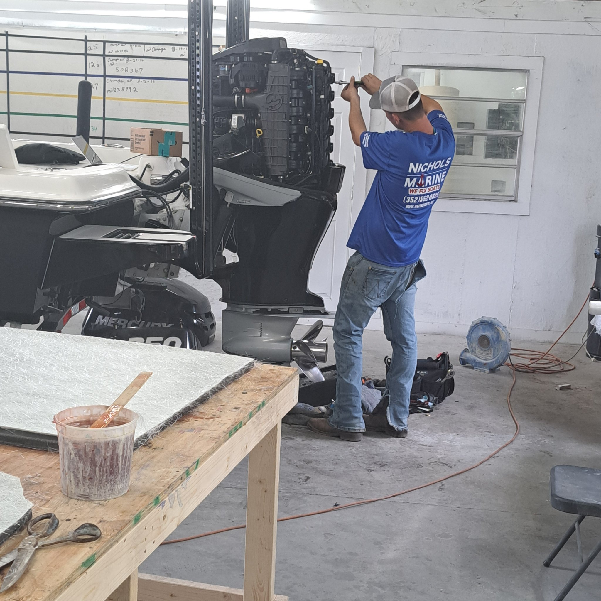
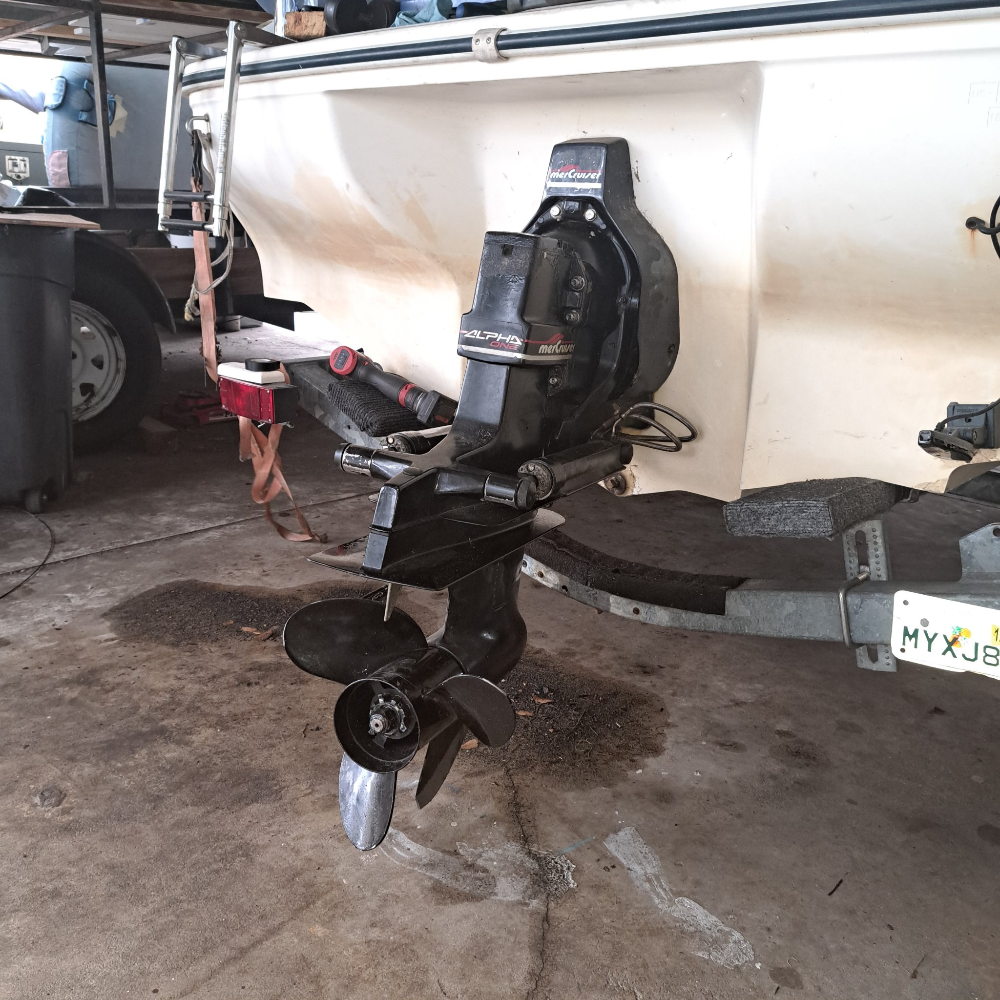
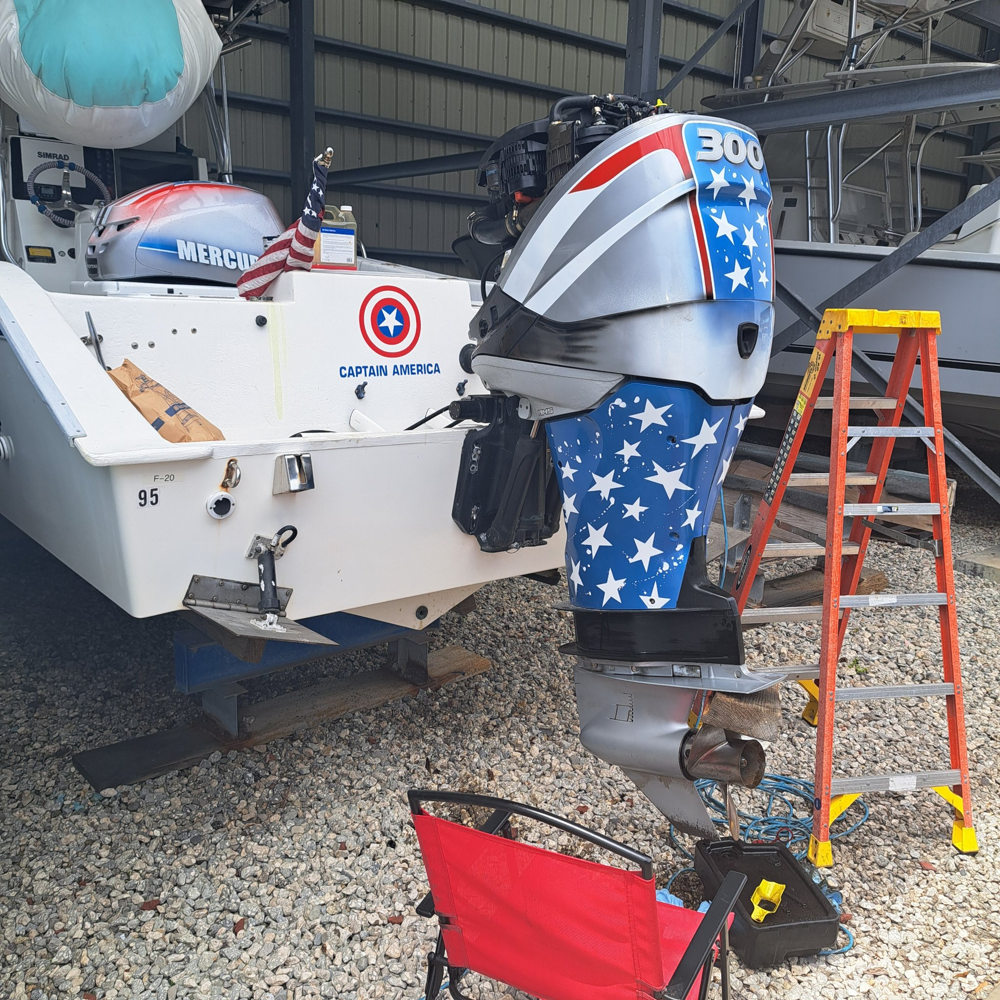

Services
Diagnostics to full repair, at your dock.
- Engine diagnostics with professional scan tooling
- Outboards — Mercury, Yamaha, Evinrude, Suzuki, Tohatsu
- MerCruiser & Volvo Penta sterndrives · PCM inboards
- Jet skis
- 100-hr & 300-hr maintenance · electrical & wiring
Recent work
On the job.



Testimonials
What our customers say.
★★★★★
"The owner Joel couldn't get the right part in time... so he set me up with a friend where I was going and his friend gave me priority service. He really took care of me and I appreciate the extra effort. Would recommend him highly."
— Raymond Bock · Google review
★★★★★
"He made suggestions as to what to check and walked me thru some possibilities. I was able to locate and fix the issue but couldn't have done it without his help. Use this guy for anything you need — he's top quality and he cares."
— Mark Garlock · Google review
Pricing
Straightforward.
$150 an hour, parts at cost.
East coast service is by appointment — a travel fee applies outside the local area, quoted up front when you call. The person who answers the phone is the person who fixes your boat.
Service areas
St. Augustine to Merritt Island.
St. AugustinePalm CoastDaytona BeachNew Smyrna BeachTitusvilleCocoaMerritt IslandCape Canaveral
FAQ
- Do you come to my dock?
- Yes — that's the whole business. Dock, marina, ramp, or driveway, wherever the boat sits.
- How much is a diagnosis?
- Labor is $150/hr plus parts at cost, and that includes the diagnostic time. East coast trips are by appointment with a travel fee, quoted before we roll.
- What brands do you work on?
- Mercury, Yamaha, Evinrude, Suzuki, Tohatsu outboards; MerCruiser and Volvo Penta sterndrives; PCM inboards; and jet skis.
- How fast can you get to me?
- Call or text and we'll give you a straight answer and the next run day for your area. If we're booked out, we'll tell you.